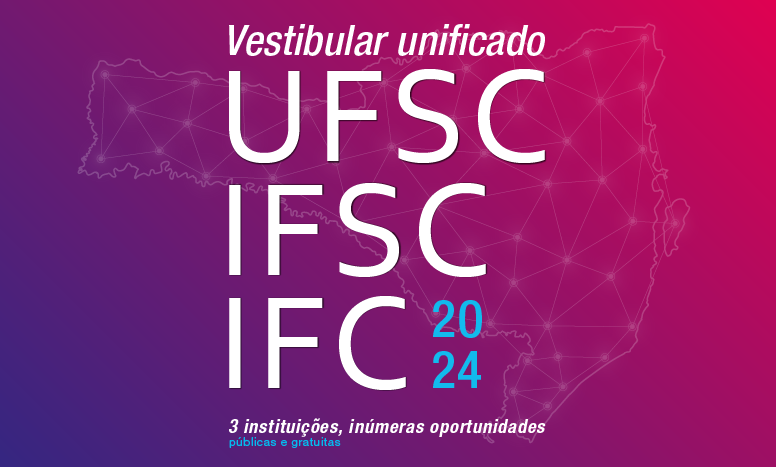
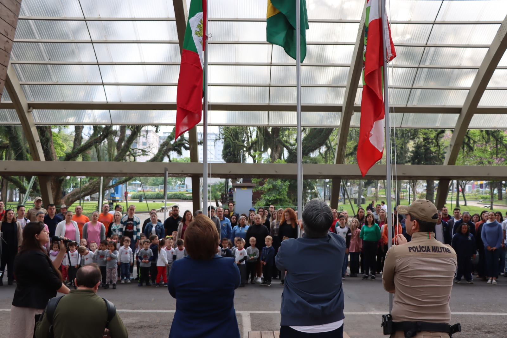
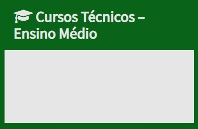
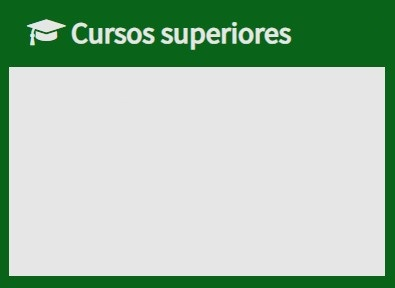
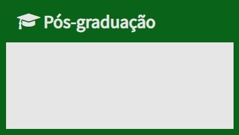

Notícias
IFC Concórdia presente na Expo Concórdia 2023
[06/09/2023] Quem visitar a Expo Concórdia 2023 poderá conhecer um pouco do setor de
bovinocultura leiteira do Instituto Federal Catarinense campus Concórdia. A instituição está
expondo seis novilhas da raça holandesa no setor agropecuário da feira, aberto desde o dia 6.
A Expo Concórdia iniciou dia 1º de setembro e vai até dia 10, domingo [...]
IFC inicia processo seletivo para 2024 - Cursos Técnicos
Integrados ao Ensino Médio
[06/09/2023] Quem visitar a Expo Concórdia 2023 poderá conhecer um pouco do setor de
bovinocultura leiteira do Instituto Federal Catarinense campus Concórdia. A instituição
está expondo seis novilhas da raça holandesa no setor agropecuário da feira, aberto desde
o dia 6. A Expo Concórdia iniciou dia 1º de setembro e vai até dia 10, domingo [...]

Inscrições abertas para Vestibular
Unificado UFSC/IFSC/IFC até 9 de
outubro
As inscrições para o Vestibular Unificado
UFSC/IFSC/IFC abrem [...]

IFC participa da Semana Cívica em
Concórdia
Na manhã do dia 1º de setembro, a [...]
Cursos

Técnico em Agropecuária
Técnico em Alimentos
Técnico em Informática para Internet

Agronomia
Bacharelado – Medicina Veterinária
Bacharelado em Engenharia de Alimentos
Licenciatura em Física
Matemática – Licenciatura

Pós-Graduação em Agroecologia
Pós-graduação em Educação Matemática
PPGPSA
Avisos
[18/01/2023] ORIENTAÇÕES PARA ALUNOS INGRESSANTES NO
1° ANO DO ENSINO MÉDIO INTEGRADO 2023
[21/12/2022] ATENÇÃO – Horário Especial de atendimento da
Coordenação de Registro Acadêmico e Cadastro Institucional no
final de 2022 e início de 2023
Agenda do Campus
Próximos eventos
Sem eventos cadastrados.
Editais
[24/08/2023] Edital nº 061 de 2023 – Processo seletivo
simplificado para contratação de professor substituto de Física
[14/08/2023] Edital de seleção de servidores para ocupação dos
Imóveis Funcionais desocupados e formação de lista de espera, no
âmbito deste Campus.
[24/07/2023] EDITAL Nº 17/2023 – GAB/CONC – CONVOCAÇÃO E
NORMAS DO PROCESSO ELEITORAL PARA ESCOLHA DOS
MEMBROS DA COMISSÃO PERMANENTE DE PESSOAL DOCENTE –
CPPD
[24/07/2023] EDITAL Nº 16/2023 – GAB/CONC – Abertura das
inscrições para a coordenação do curso Licenciatura em Física
[21/06/2023] Edital Nº 051 de 2023 – Processo seletivo
simplificado para contratação de Professor Substituto de Medicina
Veterinária: Clínica Médica de Pequenos Animais
[02/06/2023] EDITAL CONSUPER Nº 01/2023 – DE CONVOCAÇÃO
PARA ELEIÇÃO DAS COMISSÕES ELEITORAIS LOCAIS DOS CAMPUS,
CAMPUS AVANÇADOS E REITORIA DO IFC
[25/05/2023] EDITAL Nº 14/2023 – GAB/CONC – Eleição de
Coordenador de Curso – Bacharelado em Agronomia do IFC –
Campus Concórdia
[02/05/2023] Processo Seletivo – Moradia estudantil masculina e
feminina – Vagas Remanescentes 2023
[24/04/2023] Edital de Fluxo Contínuo – Apoio às Ações de
Extensão 2023
[04/04/2023] Edital Nº 5 de 2023 – Curso de Formação
Continuada – Aperfeiçoamento em doenças exóticas e emergentes
em animais
CURSOS
SECRETARIA
BIBLIOTECA
REITORIA
PORTAL DE INGRESSO
INFORMATIVO
EDITAIS
LICITAÇÕES